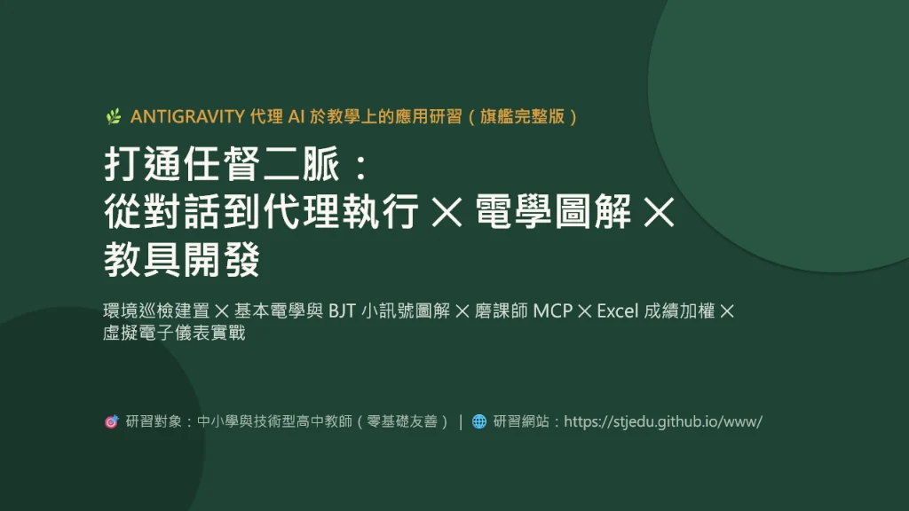
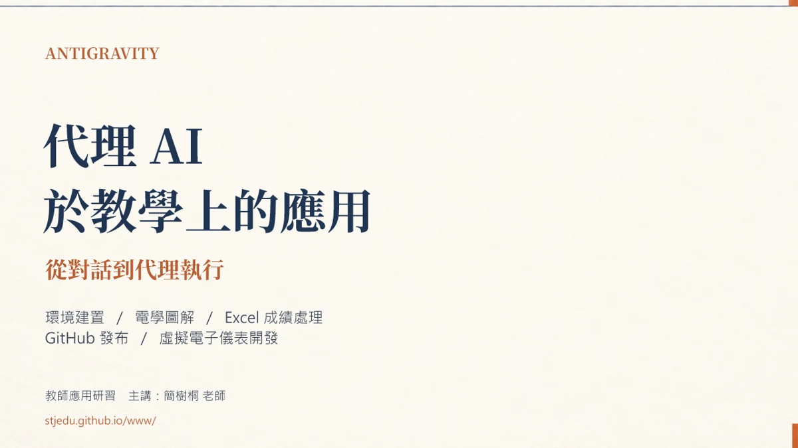
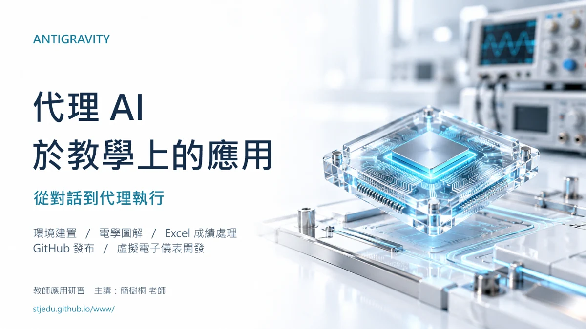
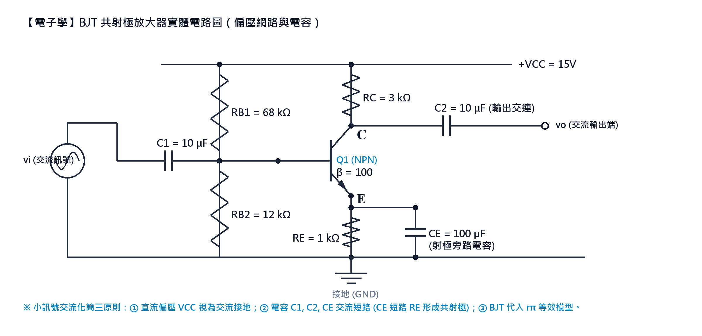

ONE WORKSHOP · DIFFERENT STYLES
研習簡報，選擇適合你的風格。
原始版完整保留，另提供五種風格。先看實際投影片比較，再下載喜歡的版本。

以上為實際投影片預覽。部分風格版曾修訂文字或電路，內容細節可能與原始版不同；白底科技風提供電路修正版。



進入 NMKING AI 平台，領取「優質化研習（1029）」AI 額度，跟著課程進行操作練習。
開放領取時段：08:00–16:00；點數池到期：2026/10/29 23:59:59。
領取頁有活動稽核告知：送出的文字問題會保存供活動分析，請先閱讀並確認後再領取。
從代理 AI 平台設定到互動教材與 GitHub，依課程順序觀看，也可選擇單集練習。
播放清單與影片皆為「不公開」，有連結的人即可觀看。若內嵌播放器無法播放，請使用各集的 YouTube 連結。
從 AI 備課、電學題庫到智慧物聯網。
為電機電子群教師打造的互動教學資源，
把課堂知識，連接到每一次動手實作。
從零代碼環境配置、AI 視覺推論到物聯網單晶片應用，滿足高中職教師課堂教學與雲端分享的所有環節。
電機電子群統測命題規格！整數手算設計，包含直流電阻分析及 BJT 小訊號 rπ 模型交流放大。
保留原始版，另提供現代學術、深色科技、白底科技、未來實驗室與日系教學插畫風。
把無聲操作錄影，製作成可跟著做的教學影片。從逐步腳本、女聲與繁體字幕，到預覽修訂及 YouTube 發布。
帶老師從帳號與網址規劃、建立倉庫、上傳首頁到啟用 GitHub Pages，完成自己的教學小站。
針對 固緯 GDS-2102E 示波器 ✕ MFG-2110 信號產生器 ✕ 丙級試題二 的完整工程級提示語！
以瀏覽器協作協助研習操作，新增 Codex 版六步驟：連線、登入接力、正常播放、單元切換與證書驗收。
解決實習現場紙本手寫成績痛點！從手寫掃描檔（PDF/圖片）多源自動校對，提取為結構化 Excel 總表與互動分析儀表板。
簡樹桐老師親授完整 4 節課！從 WebCam 控制、Prompt 提示詞工程、1:1 防變形校正、四宮格多分割監控，到 YOLO Pose 骨架手勢拍照與多人跌倒紅框警報。
簡樹桐老師親授 115-09-14 課程全輯！從 BME280 感測器與 OLED 螢幕、四按鈕碼表、MQTT (mqttgo.io) 手機 App 雙向控制，到 YOLO11 視覺即時統計。
原始版完整保留，另提供五種風格。先看實際投影片比較，再下載喜歡的版本。

以上為實際投影片預覽。部分風格版曾修訂文字或電路，內容細節可能與原始版不同；白底科技風提供電路修正版。


點選下方頁籤切換題目，點擊「查看詳解」即可彈出完整公式推導與誘答防呆分析！

【題幹】 直流電源 $E = 24\text{ V}$。電阻 $R_1 = 6\,\Omega$ 與 $R_2 = 12\,\Omega$ 並聯後，再與 $R_3 = 8\,\Omega$ 串聯。求總電阻 $R_T$ 及總電流 $I_T$？
標準答案： (A) $R_T = 12\,\Omega,\; I_T = 2\text{ A}$
精確算式： $R_1 \parallel R_2 = 4\,\Omega \implies R_T = 4 + 8 = 12\,\Omega \implies I_T = \frac{24}{12} = \mathbf{2\text{ A}}$
免安裝、純瀏覽器直接操作！結合 GW INSTEK GDS-2102E 示波器 ＋ MFG-2110 任意波形信號產生器，支援波形量測、靜態觸發鎖定與台灣工業電子丙級術科 12 題組自動評分。
本系統由「工程級提示語（Master Prompt）」自動生成，完美遵循固緯官方手冊物理規範。學員可自由切換檔位、旋鈕微調、開啟 10 步驟自動教學，或模擬丙級檢定電路板節點量測。
教師研習與教學升級，全流程一站式落地
所有 Python 工具與出題依賴均運行於隔離沙盒中，零安裝零報錯，保護學校與個人電腦系統安全。
掌握 Capacity、Role、Instruction、Standard 四大黃金構件，告別瞎聊問答，讓 AI 產出專家級標準答案。
透過個人專屬倉庫一鍵推播，終身免伺服器租金，手機、平板、智慧黑板掃 QR Code 隨點隨看。
【題幹】 直流電源 $E = 24\text{ V}$。電阻 $R_1 = 6\,\Omega$ 與 $R_2 = 12\,\Omega$ 並聯後，再與 $R_3 = 8\,\Omega$ 串聯。求總電阻 $R_T$ 及總電流 $I_T$？
✔ 正確答案：(A) $R_T = 12\,\Omega,\; I_T = 2\text{ A}$
1. 並聯等效電阻：$$R_1 \parallel R_2 = \frac{6 \times 12}{6 + 12} = \frac{72}{18} = \mathbf{4\,\Omega}$$
2. 總等效電阻：$$R_T = (R_1 \parallel R_2) + R_3 = 4 + 8 = \mathbf{12\,\Omega}$$
3. 總電流：$$I_T = \frac{E}{R_T} = \frac{24\text{ V}}{12\,\Omega} = \mathbf{2\text{ A}}$$
🚨 常見盲點：部分學生易先算 $6+12=18\,\Omega$ 再並聯 $8\,\Omega$，詳解已清楚標記避免踩雷！
【題幹】 戴維寧等效開路電壓 $E_{th} = 18\text{ V}$，等效電阻 $R_{th} = 6\,\Omega$。外接負載電阻 $R_L = 3\,\Omega$，求負載電流 $I_L$？

✔ 正確答案：(B) $I_L = 2.0\text{ A}$
1. 單迴路負載電流公式：$$I_L = \frac{E_{th}}{R_{th} + R_L}$$
2. 代入數值：$$I_L = \frac{18\text{ V}}{6\,\Omega + 3\,\Omega} = \frac{18}{9} = \mathbf{2.0\text{ A}}$$
🚨 防呆叮嚀：求 $R_{th}$ 時獨立電壓源應「短路 ($0\text{ V}$)」，學生常誤當開路！
【題幹】 戴維寧模型 $E_{th} = 20\text{ V},\; R_{th} = 5\,\Omega$。求使負載 $R_L$ 獲得最大功率之條件與最大功率 $P_{L(\max)}$？
✔ 正確答案：(A) $R_L = 5\,\Omega,\; P_{L(\max)} = 20\text{ W}$
1. 阻抗匹配條件：$$R_L = R_{th} = \mathbf{5\,\Omega}$$
2. 最大功率計算：$$P_{L(\max)} = \frac{E_{th}^2}{4 R_{th}} = \frac{20^2}{4 \times 5} = \frac{400}{20} = \mathbf{20\text{ W}}$$
🚨 誘答陷阱：分母常忘乘係數 $4$，易誤選 $80\text{ W}$（選項 B 典型誘答）！
【題幹】 如圖所示為 BJT 共射極 (CE) 交流小訊號 $r_\pi$ 等效模型。已知輸入電阻 $r_\pi = 1.2\text{ k}\Omega$，$h_{fe} = \beta = 100$（互導 $g_m = \beta / r_\pi = 83.33\text{ mA/V}$），集極負載電阻 $R_C = 3\text{ k}\Omega$。忽略厄利效應 ($r_o \to \infty$)，求放大器小訊號電壓增益 $A_v = v_o / v_i$？

✔ 正確答案：(C) Av = −250（反相放大 250 倍）
【方法一：基極電流分析法 (經典法)】
1. 輸入端由歐姆定律可得輸入訊號：$v_i = v_\pi = i_b \cdot r_\pi = i_b \times 1.2\text{ k}\Omega$
2. 輸出端由相依電流源流入接地，經 $R_C$ 流回，產生反相電壓：$v_o = -(\beta \cdot i_b) \cdot R_C = -(100 \cdot i_b) \times 3\text{ k}\Omega = -300\text{ k}\Omega \cdot i_b$
3. 交流電壓增益：$$A_v = \frac{v_o}{v_i} = \frac{-(\beta \cdot i_b) \cdot R_C}{i_b \cdot r_\pi} = -\frac{\beta \cdot R_C}{r_\pi} = -\frac{100 \times 3\text{ k}\Omega}{1.2\text{ k}\Omega} = \mathbf{-250}$$
【方法二：互導分析法 (跨導法)】
1. 互導 $g_m = \frac{\beta}{r_\pi} = \frac{100}{1.2\text{ k}\Omega} = \frac{1}{12}\text{ A/V} \approx 83.33\text{ mA/V}$
2. 電壓增益直接速算：$$A_v = -g_m \cdot R_C = -\frac{1}{12} \times 3000 = \mathbf{-250}$$
由 Antigravity 代理人全自動自主演練！透過自然語音旁白示範一條龍發布。
老師可直接點擊「一鍵複製完整提示語」，貼至 Google Antigravity、Claude 或 ChatGPT 對話框中，即可自動重現整套高度擬真的雙儀器模擬網頁！
MCP 用來連接代理人與工具。Chrome 擴充功能、內建瀏覽器及自訂 Chrome DevTools MCP 是不同的連接方式，設定與可用工具也不同。
若採自訂 MCP，請依所選伺服器文件設定。平台警示應閱讀並依要求處理；登入、測驗與學習紀錄不應用腳本偽造。
查看 Codex 版六步驟 →解決實習教師日常最痛苦的「紙本手寫成績掃描檔校對與加權試算」！透過 AI 代理人多源比對手寫劃記（X、V、補考），自動生成標準 Excel 試算表與現代化互動分析儀表板。
• 多源手寫紙本分散：小考在 181 檔、抽測驗收在 170 檔、隨堂小考在 180 檔，手寫筆跡包含「X（缺考）」、「V（通過）」或自訂分數。
• 手動謄寫易出錯：35 位學生跨多次登記，若用肉眼人工作對常發生漏登記、座號位移與加權算錯。
• AI 全自動化成果：使用 Python `openpyxl` 建立 4 個工作表（原始實習考查、平時抽測、加權總表），自動標註不及格粉紅底色與及格率統計。
資訊二甲_手寫登記成績正規化總表.xlsx，可點擊上方按鈕直接下載。ym1234）、即時數據統計卡與及格率圓餅視覺化。
學生遇到 Bug 時向 AI 下達此句，AI 將調用 MCP 自動閱讀 log 並就地修復程式：
ESP32 接線安全與 AI 提示詞關鍵：